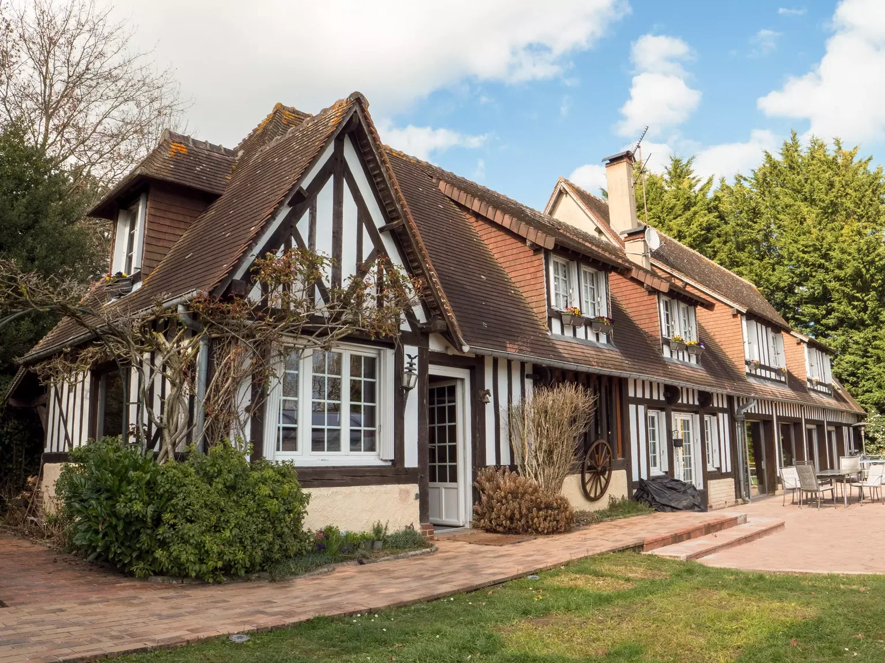
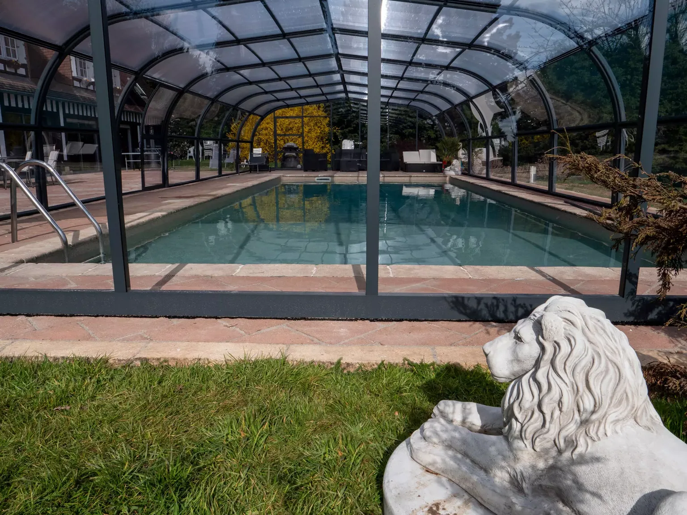
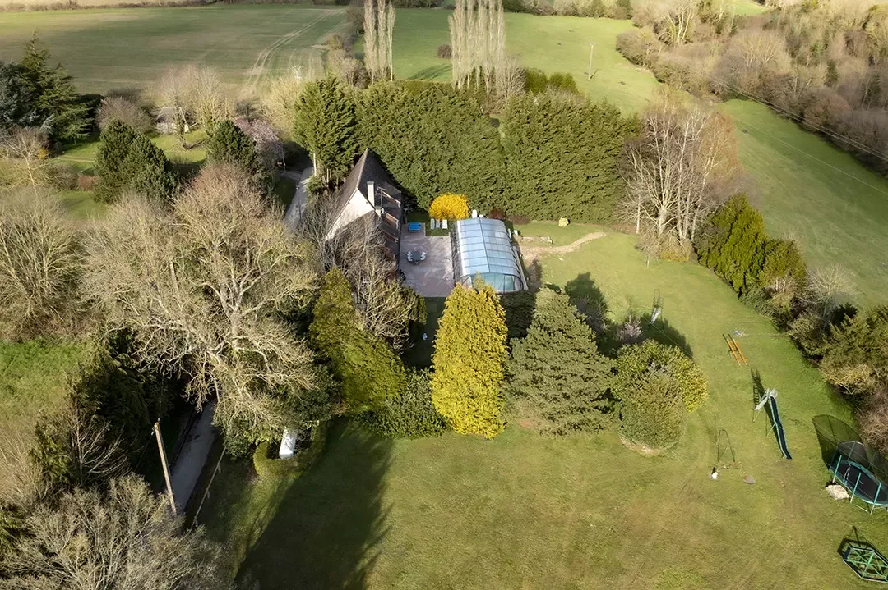
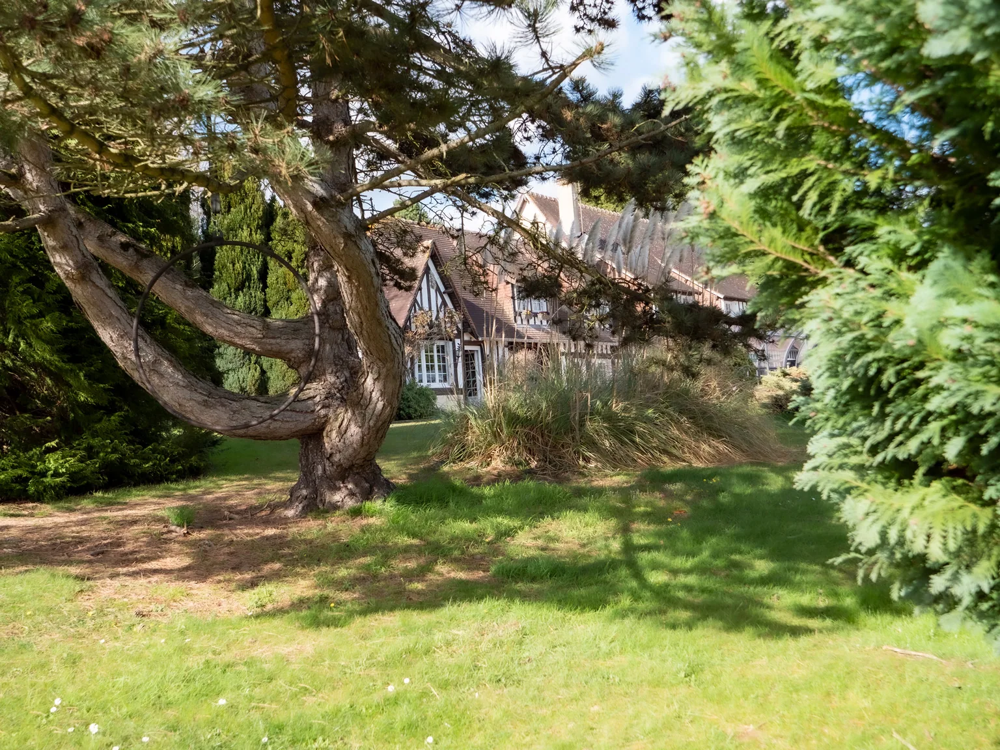

Le Domaine
aux Lions
A timber-framed house, eight bedrooms and a large garden. The whole estate is yours.
Whole house · up to 15 guests
Fauguernon, Normandy
Around 2 hours from ParisNormandy · Around 2 hours from Paris
A house for 15 guests.
We have designed our home with your comfort in mind: the comfort and luxury of a hotel, the facilities of a holiday resort, with added privacy and tranquillity.
Explore the spaces and facilities

A personal welcome.
The beds are made. Linen is provided. We welcome you in person and show you around.
And throughout the house, paintings by Normandy artists and contemporary works.
See the bedroomsThe covered pool.
Covered, secured and heated to 28°C all year. From a morning dip to an afternoon swim.
Open from 8am to 8pm. Temperature may vary in exceptionally cold weather.
The estate’s facilities
Tennis and the garden.
A private tennis court and 6,000 m² of greenery. Pétanque, table tennis, games and a barbecue: everyone can enjoy the outdoors in their own way.
Enjoy the estate with family
Step inside the estate.
Choose a space, then look around. The 360° tour takes you from the house into the garden.

With family or your team.

In our guests’ words.
Guest testimonials. French reviews translated into English.

A beautiful, comfortable house in a wonderful setting. Everything has been thought of to make your stay as enjoyable as possible!
Lovely house to visit with a group of friends / family. Everything what you need in a holiday house is there. Good pool and good beds. Safety for children is guaranteed. Thank you very much !!
We had an excellent stay at this absolutely magnificent estate, both inside and outside — the pool is incredible. Communication was very easy and the welcome very warm!
A very pleasant, spacious house with a magnificent garden. Our stay was perfect in every way!
I can only recommend David and Svitlana’s house; communication with them was very easy! The house is perfectly equipped for adults and children alike. The garden is a real paradise, and a weekend is too short to try every activity: pool, tennis, pétanque, zip line, trampoline, roundabout… The dining spaces are ideal for large groups, and there is plenty of crockery. We had a dream weekend!
A beautiful house with a wonderfully equipped garden, with plenty to delight adults and children. The house is lovely too; everyone can find a space and an atmosphere that suits them. Games are available for every age, with things to do whatever the weather…
A very restorative stay in a magnificent house, with everything to please adults and children: a pool, sports and children’s games! The house is clean and nothing is missing.
An amazing stay in this magnificent house. Contact with the owners was very easy. There were 15 of us, and we made the most of everything available: billiards, tennis, the hot tub, table tennis and more… Wonderful! An incredible stay. I highly recommend it. We will definitely return!

Fauguernon, in the Pays d’Auge.
Fauguernon. A quiet hamlet surrounded by fields. Less than thirty minutes from Deauville and Honfleur, around two hours from Paris.
700 chemin de la Boullaye
14100 Fauguernon, France
Book the estate.
Choose your dates. We’ll help you plan the rest.